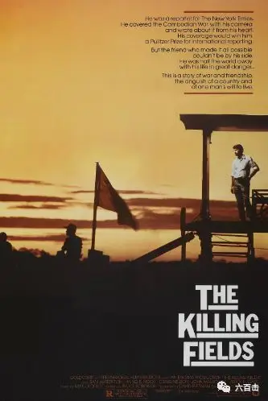
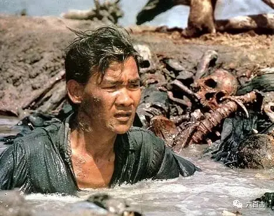
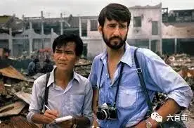
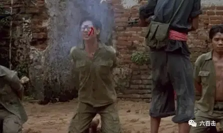
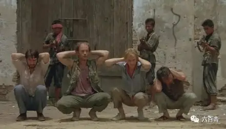
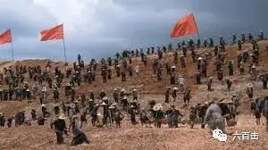
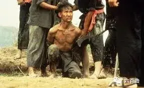
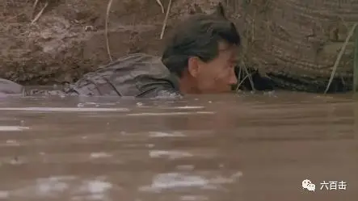
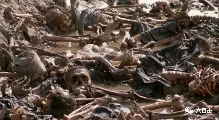
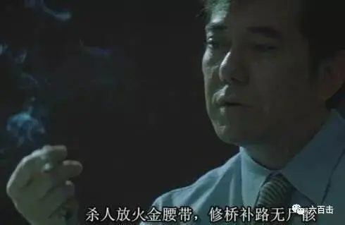

如果说纳粹主义是建立在错误的生物学基础上的话（认为存在优等人种），那么共产主义就是建立在错误的社会学基础上的（认为存在优等阶级），两者虽然就其目的相差甚远（一个试图建立民族帝国，一个试图建立无国家社会），然而在为了达到“最终目的”而不折手段这一点上可以说是完全一致的。
——林志刚

20世纪是人类追逐实现人间天堂的时代，同时也是人类历史上最惨烈的时代，两次世界大战均发生在这个时代。
这个时代爆发了无数次惨绝人寰的大屠杀，其中最可怕的就是奥斯维辛和红色高棉。
很多人都很熟悉纳粹在奥斯维辛集中营的暴行，但因为一些原因，却对红色高棉知之甚少。
而红色高棉比起奥斯维辛有过之而无不及，犹太人惨死纳粹手中，至少还有敌人可以去恨。
而红色高棉则是六亲不认、自相残杀，你都找不到恨的对象，因为要把你迫害致死的是自己的家人和朋友，所以法国学者吉恩·拉古特发明「 自我屠杀」一词来形容红色高棉。
柬埔寨共产党怀着纯粹共产主义的梦想，肢解了婚姻和家庭关系，饥荒、苦役、肆意的处决以及疾病或迫害等非正常原因，使得柬埔寨有上百万人死亡。
据柬埔寨历史资料收集中心报告，他们在美国、澳大利亚、荷兰三国的协助下，在全柬170个县中的81个县进行了勘察，在9,138个坑葬点，发掘出近150万具骷髅，而当时柬埔寨全部人口不到700万。
今天要介绍的奥斯卡电影《杀戮战场》就表现了这场屠杀，该片根据两位记者<柬埔塞的迪斯·普朗和美国的悉尼·斯坎伯格>的真实经历改编，由罗兰·约菲执导，之前介绍过他另一部奥斯卡作品《教会》。

值得一提的是，扮演普朗的吴汉润是当年惨痛历史的幸存者。
出演本片之前没有任何表演经验，亲身经历大屠杀的吴汉润自己出演自己的角色，他也凭此片获得奥斯卡最佳男配角。

而电影本身也非常出色，在第38届英国电影学院奖角逐中获得了13项提名，同时收获3项奥斯卡奖项、4项奥斯卡提名。
根据烂蕃茄上的35篇知名影评人的专业评论文章，《杀戮战场》的好评率高达91%，而网站注册用户投票好评率也达89%。
《芝加哥太阳报》著名影评人罗杰·艾伯特在其专栏文章中写道：
无论从哪一个技术层面上来说，这部电影都可谓是大师之作，其中在亚洲地区取景拍摄更是增强了其说服力。不过，电影中最完美的瞬间还是来自于人物之间的那些对话、相互信任、等待、恐惧、暴力和绝望……
01 噩梦将至
这部电影很巧妙，并没有过多直接去表现这场惨剧，而是通过两位记者的所见所闻让我们窥见了这场灭绝人性的惨剧。
电影前半部分发生在红色高棉占领金边之前，主要围绕记者悉尼和他的翻译兼助手普朗展开。

悉尼是纽约时报驻柬埔寨的战地记者，1972年，美国在越南溃败后，很多美国人纷纷撤离柬埔寨，但是悉尼决定留下来继续开展新闻工作。
悉尼经常面对突发的袭击和爆炸，他的翻译兼助手普朗足智多谋，多次帮助悉尼化险为夷，期间两人建立了深厚的友谊。
1975年，眼看红色高棉要攻入金边，悉尼告诉普朗，如果这里被红色高棉占领，后果将不堪设想，要普朗做出决定，是否继续留在这里。
普朗犹豫再三，含着眼泪告诉悉尼：
我爱我的家人，但是我又是一名记者，我很痛苦.……
最终，普朗将自己的妻子和孩子送上了前往美国的直升机，自己则留在了金边，而悉尼和很多志同道合的朋友也留了下来。
很快，红色高棉占领了金边，金边的人民怀着幻想热烈欢迎红色高棉进入金边，一时间欢呼声响彻整个金边，就连普朗也高兴地大喊：终于和平了。
可是不多久，悉尼和普朗就发现了端倪，他们在医院看到很多被红色高棉打伤打死的人，红色高棉打着“防御美国空袭”的幌子将大家纷纷从城市驱赶到了乡下。
到了乡下，他们目睹很多人被残忍处决。

悉尼这样的外国人也被红色高棉当作了间谍和危险分子，都被抓了起来，随时面临被处决的可能。

但是在普朗的机智斡旋下，他们被红色高棉释放了，意识到红色高棉的危险后，他们纷纷逃亡法国大使馆。
外籍人士可以凭护照和签证返回自己的国家，就这样悉尼等人顺利逃离了柬埔寨，而普朗因为假护照被识穿被扣留下来。
02 人间天堂变人间地狱
接着电影的后半部分围绕普朗的遭遇展开，他被抓上车，拉到乡下进行劳动改造。
在这里“安卡”（党组织，高棉语）推行极端恐怖统治，只要被高棉军看的党性不够存粹，每个人随时都有可能被处决。
他们派来党代表用谎言试探劳改的人们，他们告诉大家“安卡需要你们，安卡宽恕过去的一切”，号召他们中的“医生、教授和学生”等交心。
有几个人被感动的热泪盈眶，投向了“安卡”的怀抱，而死神转身就对这批“隐藏很深的阶级敌人”划下了镰刀——“向安卡坦白人全都消失了”。
党代表告诉大家“国家需要有知识的人，医生、教师还有其他的读书人，你们都站出来为国家服务吧”然后，站出来的人都不见了。
内斗和残杀同胞的本领，纳粹真的跟不上红色高棉的水平。

他们还不断的告诫大家“敌人就在我们内部，没有人值得相信”、“没有思想，除了党的思想；没有爱，除了爱‘安卡’”……每个人都活在恐惧之中。
他们中党性最纯正的是十多岁的小孩，劳改犯们就在这些红色小孩的眼皮底下劳动。
如果你敢偷懒、敢偷偷地薅共产主义羊毛，那你会被立马拉出来处决。
普朗倒很聪明，他知道这个时候只有沉默能拯救他，必须要少说话，要让大家觉得他只是一个没有任何文化的老实农民才有活下去的可能。
可是，艰辛的劳作让普朗饥肠辘辘，但是红色高棉给的粮食根本支撑不了身体的需要。
普朗饥饿难耐，偷偷地用小刀划破黄牛的皮，饥渴地喝着牛血，但却被人发现了。
普朗遭到一阵毒打，被反手拴在树下，差点死在烈日之下。

求生的渴望让他挨过了这次难关，普朗明白，他必须要逃离这个地狱，否则只有死路一条。
在一次劳作之后，普朗趁人不注意，潜在水里，逃了出去。

普朗一路狂奔，想要逃亡泰国，一下子不小心跌入到一片水潭，眼前的场景让他倒吸一口凉气，河边堆满了白骨，这些可都是那些被消失的同胞。
累累白骨将永远把红色高棉定在历史的耻辱柱上。

普朗继续前行，历经艰险和波折，最终逃到了泰国，和一直寻找他的悉尼紧紧地拥抱在一起。
《杀戮战场》以这样一种特别的方式展现了红色高棉的恐怖，这场大屠杀的真相需要被不断揭露，需要被更多人铭记和反思。

扮演普朗的吴汉润于1985年接受《人物周刊》采访时说：
我希望可以让全世界都看到，柬埔寨的人们遭受了多么严重的饥荒，又有多少人在共产党的红色恐怖统治之下丧生了，现在我心里满足了，我做成了一件了不起的事情。
的确，吴汉润很了不起，《杀戮战场》也很了不起，因为他们揭露了真相。
关注并回复：杀戮战场
获取电影资源
相关推荐：
《超脱》| 我的灵魂失语了
官方说法
100双绝望的眼睛
这里没有挑逗你眼目情欲的小鲜肉
也没有挑动你肉体情欲的段子
更没有膨胀你今生骄傲的鸡血
我们只在乎那些最质朴真诚的作品
在那里我们才能恢复真正的想象力
我们也坚信这才是我们真正需要的

ID:Six_hundred_hits
长按二维码，一键关注
【六百击】
-END-
电影评论
尽情分享朋友圈

苹果打赏通道